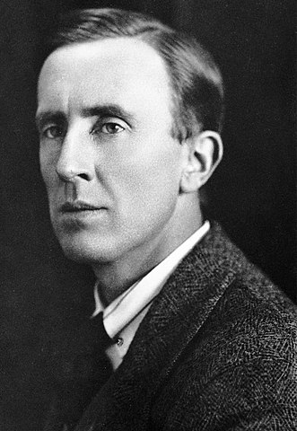

El autor
J. R. R. Tolkien
John Ronald Reuel Tolkien nació Bloemfontein, hoy Sudáfrica el 3 de enero de 1892, a menudo citado como J. R. R. Tolkien o JRRT, fue un escritor, poeta, filólogo, lingüista y profesor universitario británico, conocido principalmente por ser el autor de las novelas clásicas de fantasía heroica El hobbit, El Silmarillion y El Señor de los Anillos.
De 1925 a 1945, Tolkien ocupó la cátedra Rawlinson y Bosworth en la Universidad de Oxford, enseñando anglosajón y, de 1945 a 1959, fue profesor de Lengua y Literatura inglesa en Merton. Era amigo cercano del también escritor C. S. Lewis y ambos eran miembros de un informal grupo de debate literario conocido como los Inklings. Tolkien fue nombrado Comendador de la Orden del Imperio Británico por la reina Isabel II el 28 de marzo de 1972.
Después de su muerte, el tercer hijo de Tolkien, Christopher, publicó una serie de obras basadas en las amplias notas y manuscritos inéditos de su padre, entre ellas El Silmarillion y Los hijos de Húrin. Estos libros, junto con El hobbit y El Señor de los Anillos, forman un cuerpo conectado de cuentos, poemas, historias de ficción, idiomas inventados y ensayos literarios sobre un mundo imaginado llamado Arda, y más extensamente sobre uno de sus continentes, conocido como la Tierra Media. Entre 1951 y 1955, Tolkien aplicó la palabra legendarium a la mayor parte de estos escritos.
Si bien escritores como William Morris, Robert E. Howard y E. R. Eddison precedieron a Tolkien en el género literario de fantasía con obras tan famosas e influyentes como las de Conan el Bárbaro, el gran éxito de El hobbit y El Señor de los Anillos cuando se publicaron en Estados Unidos condujo directamente al resurgimiento popular del género. Esto ha causado que Tolkien sea identificado popularmente como «el padre» de la literatura moderna de fantasía, o más concretamente, de la alta fantasía. Los trabajos de Tolkien han inspirado muchas otras obras de fantasía y han tenido un efecto duradero en la cultura popular. En 2008, el periódico The Times le clasificó sexto en una lista de «Los 50 escritores británicos más grandes desde 1945».
Falleció en Bournemouth, Dorset el 2 de septiembre de 1973.